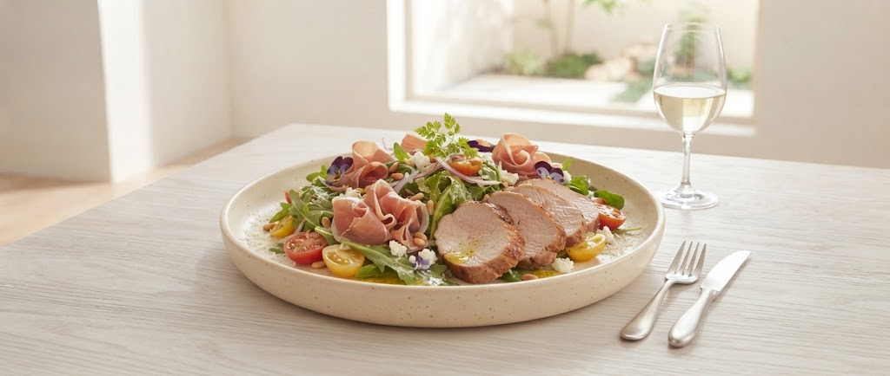

お電話でのご予約・お問い合わせ
023-622-9095
ホテルの本格フレンチで培った技術を凝縮。自家熟成ローストポークのしっとりとした質感と、生ハムの旨味がワインを誘う、当店不動のNo.1メニューです。
Owner's Story
東京プリンスホテルでの修業時代、私が学んだのは「料理は人を笑顔にするためのもの」ということでした。地元・山形に戻り、2004年にヘリアンをオープン。隠し味に味噌や醤油を使い、何度でも通いたくなる「日常の洋食」を目指しました。
「一皿一皿に魂を込めたい。だからシェフは私一人だけです。」
— 松田 昌夫


ヘリアンの本格ランチを、待ち時間ゼロで。
お昼休みに入る前にWeb・お電話でサクッと注文完了。
指定のお時間にご来店でスムーズにお受け取り。貴重なお昼時間を無駄にしません。
シェフ手作りのホテルクオリティの味をオフィスやご自宅で楽しみいただけます。
💡「こんなお弁当が食べたい！」ご意見募集中
山形大学の学生さん・教職員の皆様、近隣オフィスにお勤めの皆様のお声を反映したメニューを開発中です。
サービス開始時期や限定メニューのお知らせは公式Facebookにて順次発表いたします。
アクセスとご予約
ご予約はお電話にて承ります
023-622-9095